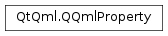

QQmlProperty¶
Synopsis¶
Functions¶
- def
__eq__(arg__1) - def
connectNotifySignal(dest, method) - def
connectNotifySignal(dest, slot) - def
hasNotifySignal() - def
index() - def
isDesignable() - def
isProperty() - def
isResettable() - def
isSignalProperty() - def
isValid() - def
isWritable() - def
method() - def
name() - def
needsNotifySignal() - def
object() - def
property() - def
propertyType() - def
propertyTypeCategory() - def
propertyTypeName() - def
read() - def
reset() - def
type() - def
write(arg__1)
Detailed Description¶
-
class
PySide2.QtQml.QQmlProperty¶ -
class
PySide2.QtQml.QQmlProperty(arg__1) -
class
PySide2.QtQml.QQmlProperty(arg__1, arg__2) -
class
PySide2.QtQml.QQmlProperty(arg__1, arg__2) -
class
PySide2.QtQml.QQmlProperty(arg__1, arg__2) -
class
PySide2.QtQml.QQmlProperty(arg__1, arg__2, arg__3) -
class
PySide2.QtQml.QQmlProperty(arg__1, arg__2, arg__3) -
class
PySide2.QtQml.QQmlProperty(arg__1) Parameters: - arg__2 –
PySide2.QtQml.QQmlContext - arg__1 –
PySide2.QtCore.QObject - arg__3 –
PySide2.QtQml.QQmlContext
- arg__2 –
-
PySide2.QtQml.QQmlProperty.PropertyTypeCategory¶
-
PySide2.QtQml.QQmlProperty.Type¶
-
PySide2.QtQml.QQmlProperty.connectNotifySignal(dest, method)¶ Parameters: - dest –
PySide2.QtCore.QObject - method –
PySide2.QtCore.int
Return type: PySide2.QtCore.bool- dest –
-
PySide2.QtQml.QQmlProperty.connectNotifySignal(dest, slot) Parameters: - dest –
PySide2.QtCore.QObject - slot – str
Return type: PySide2.QtCore.bool- dest –
-
PySide2.QtQml.QQmlProperty.hasNotifySignal()¶ Return type: PySide2.QtCore.bool
-
PySide2.QtQml.QQmlProperty.index()¶ Return type: PySide2.QtCore.int
-
PySide2.QtQml.QQmlProperty.isDesignable()¶ Return type: PySide2.QtCore.bool
-
PySide2.QtQml.QQmlProperty.isProperty()¶ Return type: PySide2.QtCore.bool
-
PySide2.QtQml.QQmlProperty.isResettable()¶ Return type: PySide2.QtCore.bool
-
PySide2.QtQml.QQmlProperty.isSignalProperty()¶ Return type: PySide2.QtCore.bool
-
PySide2.QtQml.QQmlProperty.isValid()¶ Return type: PySide2.QtCore.bool
-
PySide2.QtQml.QQmlProperty.isWritable()¶ Return type: PySide2.QtCore.bool
-
PySide2.QtQml.QQmlProperty.method()¶ Return type: PySide2.QtCore.QMetaMethod
-
PySide2.QtQml.QQmlProperty.name()¶ Return type: unicode
-
PySide2.QtQml.QQmlProperty.needsNotifySignal()¶ Return type: PySide2.QtCore.bool
-
PySide2.QtQml.QQmlProperty.object()¶ Return type: PySide2.QtCore.QObject
-
PySide2.QtQml.QQmlProperty.__eq__(arg__1)¶ Parameters: arg__1 – PySide2.QtQml.QQmlPropertyReturn type: PySide2.QtCore.bool
-
PySide2.QtQml.QQmlProperty.property()¶ Return type: PySide2.QtCore.QMetaProperty
-
PySide2.QtQml.QQmlProperty.propertyType()¶ Return type: PySide2.QtCore.int
-
PySide2.QtQml.QQmlProperty.propertyTypeCategory()¶ Return type: PySide2.QtQml.QQmlProperty.PropertyTypeCategory
-
PySide2.QtQml.QQmlProperty.propertyTypeName()¶ Return type: str
-
static
PySide2.QtQml.QQmlProperty.read(arg__1, arg__2, arg__3)¶ Parameters: - arg__1 –
PySide2.QtCore.QObject - arg__2 – unicode
- arg__3 –
PySide2.QtQml.QQmlEngine
Return type: - arg__1 –
-
static
PySide2.QtQml.QQmlProperty.read(arg__1, arg__2, arg__3) Parameters: - arg__1 –
PySide2.QtCore.QObject - arg__2 – unicode
- arg__3 –
PySide2.QtQml.QQmlContext
Return type: - arg__1 –
-
static
PySide2.QtQml.QQmlProperty.read(arg__1, arg__2) Parameters: - arg__1 –
PySide2.QtCore.QObject - arg__2 – unicode
Return type: - arg__1 –
-
PySide2.QtQml.QQmlProperty.read() Return type: object
-
PySide2.QtQml.QQmlProperty.reset()¶ Return type: PySide2.QtCore.bool
-
PySide2.QtQml.QQmlProperty.type()¶ Return type: PySide2.QtQml.QQmlProperty.Type
-
static
PySide2.QtQml.QQmlProperty.write(arg__1, arg__2, arg__3, arg__4)¶ Parameters: - arg__1 –
PySide2.QtCore.QObject - arg__2 – unicode
- arg__3 – object
- arg__4 –
PySide2.QtQml.QQmlEngine
Return type: PySide2.QtCore.bool- arg__1 –
-
static
PySide2.QtQml.QQmlProperty.write(arg__1, arg__2, arg__3) Parameters: - arg__1 –
PySide2.QtCore.QObject - arg__2 – unicode
- arg__3 – object
Return type: PySide2.QtCore.bool- arg__1 –
-
PySide2.QtQml.QQmlProperty.write(arg__1) Parameters: arg__1 – object Return type: PySide2.QtCore.bool
-
static
PySide2.QtQml.QQmlProperty.write(arg__1, arg__2, arg__3, arg__4) Parameters: - arg__1 –
PySide2.QtCore.QObject - arg__2 – unicode
- arg__3 – object
- arg__4 –
PySide2.QtQml.QQmlContext
Return type: PySide2.QtCore.bool- arg__1 –
© 2018 The Qt Company Ltd. Documentation contributions included herein are the copyrights of their respective owners. The documentation provided herein is licensed under the terms of the GNU Free Documentation License version 1.3 as published by the Free Software Foundation. Qt and respective logos are trademarks of The Qt Company Ltd. in Finland and/or other countries worldwide. All other trademarks are property of their respective owners.